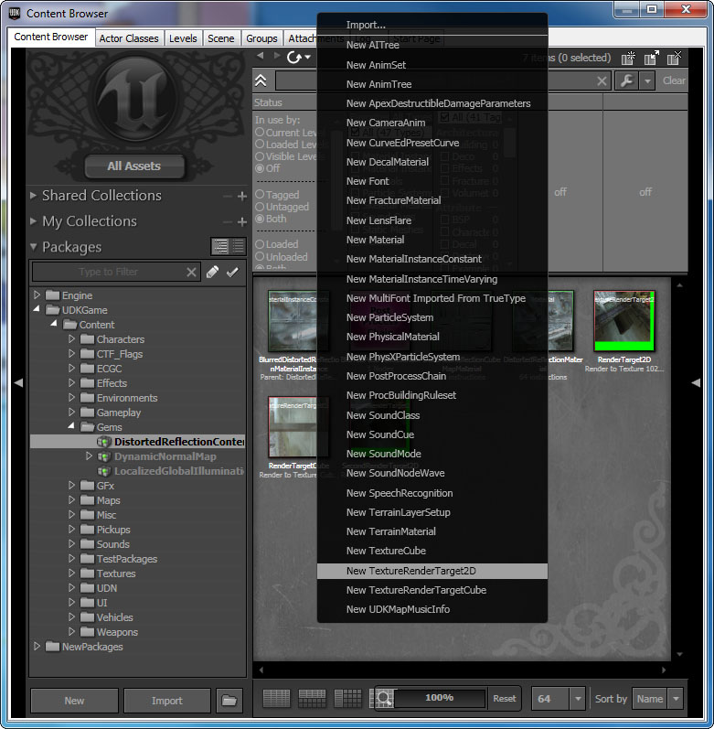
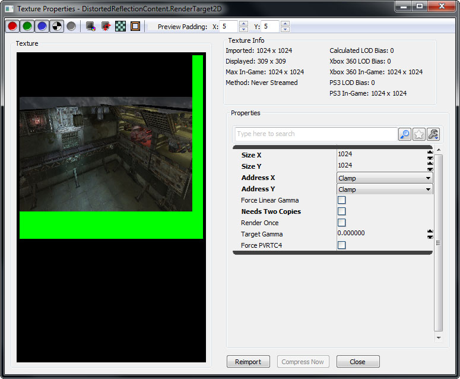
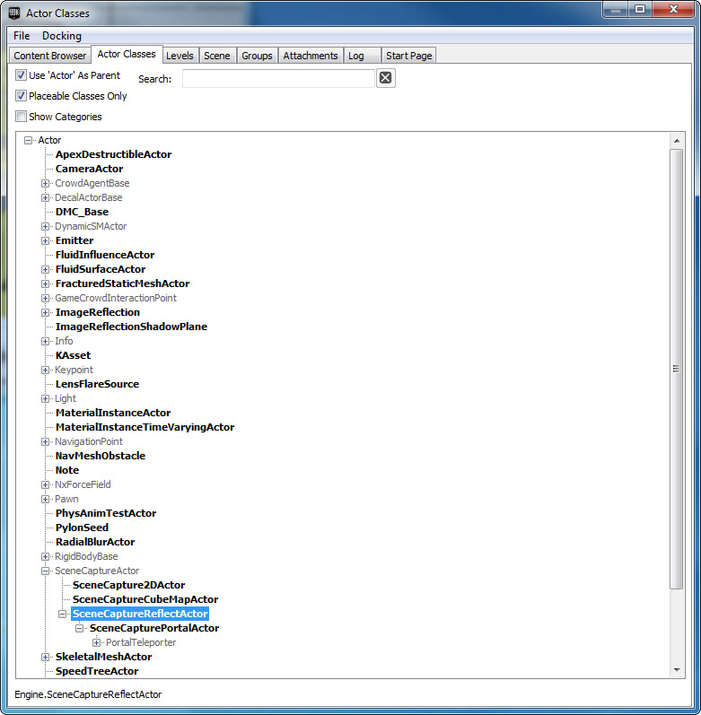
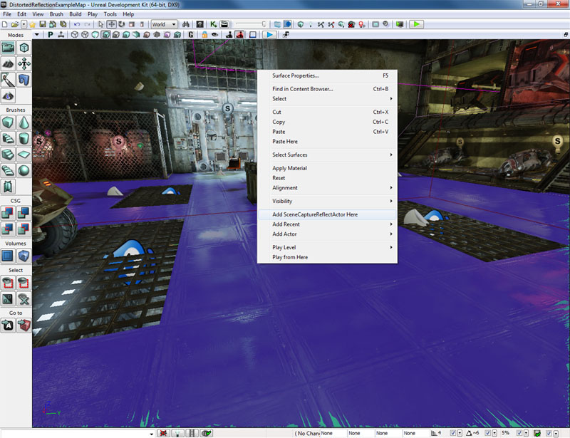
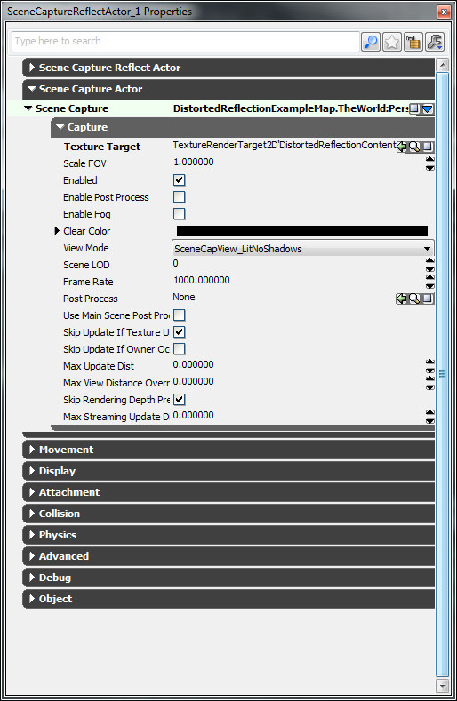
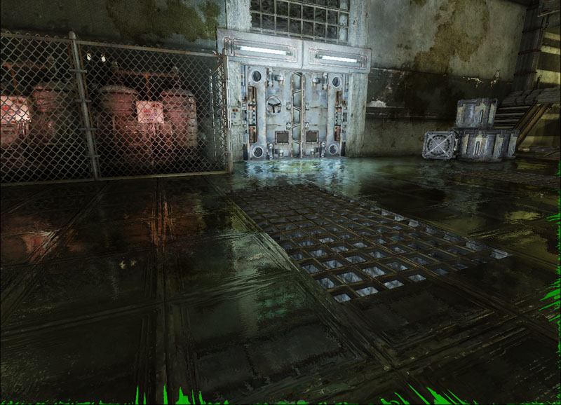
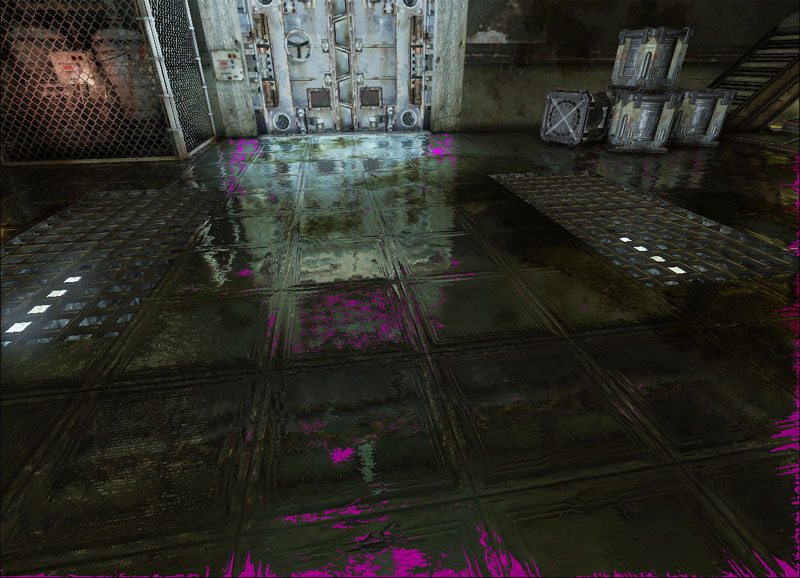
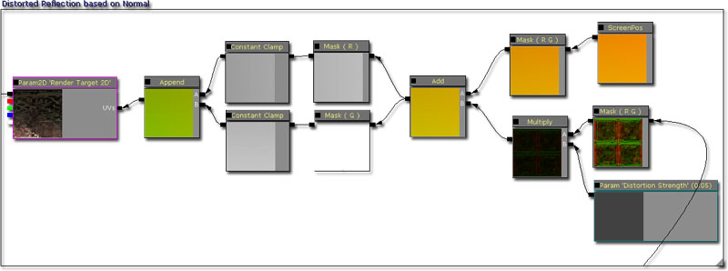

UDN
Search public documentation:
DevelopmentKitGemsCreatingDistortedReflectionCH
English Translation
日本語訳
한국어
Interested in the Unreal Engine?
Visit the Unreal Technology site.
Looking for jobs and company info?
Check out the Epic games site.
Questions about support via UDN?
Contact the UDN Staff
日本語訳
한국어
Interested in the Unreal Engine?
Visit the Unreal Technology site.
Looking for jobs and company info?
Check out the Epic games site.
Questions about support via UDN?
Contact the UDN Staff
创建变形的倒影
最后一次测试是在2011年4月份的UDK版本上进行的。
可以与 PC 兼容
概述
为了使材质更具有真实性，有时候需要一些强烈的反光效果有时候需要一些细微的反光效果。由于性能原因，可以创建一个脱机的静态立方体贴图，然后在实时运行时使用它来实现在这个效果。由于摩尔定律，现在可以使用更多的处理能力来生成实时倒影，然后将其应用在材质中。现在可以很容易地创建真实世界中的反光材质，比如镜子、大理石或金属。
渲染目标
渲染目标是不在屏幕上渲染的视口。也就是说，它们展现了世界的视图，但是它们不会显示在屏幕上。可以在材质中应用它们，并且在材质中它变得非常有用；因为稍后您可以在材质编辑器中根据需要自由地修改渲染目标。
创建渲染目标
创建渲染目标非常简单，只要右击内容浏览器， 然后选择"New TextureRenderTarget2D(新建TextureRenderTarget2D)"即可。
输入包名称、可选的组名称和该渲染目标的名称。在这个示例中，我们我们决定把Render Target(渲染目标)存储在地图中而不是一个单独的包中。因为渲染目标通常仅用于一个特定的地图中，所以这样做是有用的。当然，具体存储在哪里由您自己决定。它具有一些参数，您可以通过对其进行调整来调整RenderTarget 2D（渲染目标2D）。
- Format(格式) - RenderTarget2D的格式。
- A8R8G8B8 - 8位RGBA，其值仅能位于0到255之间。
- G8 - 8位灰度模式, 其值仅能位于0到255之间。
- FloatRGB - 浮点RGB, 其值可以是任何浮点数。
- Height - RenderTarget2D的高度。该参数的值越小，性能越好。
- Width -RenderTarget2D的宽度。该参数的值越小，性能越好。

- Address X - 这个参数调整如果您在浮点数0到1之外采样时将返回的像素。
- Address Y -这个参数调整如果您在浮点数0到1之外采样时将返回的像素。
- Force Linear Gamma - 如果您想为该渲染目标使用线性gamma空间(一种gamma校正形式)那么设置该项为true。
- Needs Two Copies - 如果您在该场景本身中使用渲染目标那么设置该项为false。这将帮助节约内存，否则如果渲染目标是用于其他目的的离屏缓存，那么您需要保存两个副本。
- Render Once - 如果渲染目标仅需要渲染一次那么设置该项为true。这对于根本不需要改变的场景截图是有用的。
- Target Gamma - 允许您调整渲染目标贴图的gamma值。
- Force PVRTC4 - 该项不用于渲染目标，因为在iOS平台上不支持它们。
相关主题
创建场景截图倒影
跳转到内容浏览器中的Actor类别标签，并找到Scene Capture Reflect Actor。

右击您想放置Scene Capture Reflect Actor的地方。将它放置在您想生成倒影的地方。
设置场景截图倒影属性
SceneCaptureReflectActor是SceneCaptureReflectComponent的简单容器。
- Texture Target - 用于渲染场景截图的RenderTarget2D 。
- Scale FOV - 缩放视角。
- Enabled - 是否启用场景截图功能。
- Enable Post Process - 是否为该场景截图启用后期处理。
- Enable Fog - 是否为该场景截图启用雾。
- Clear Color - 在向RenderTarget2D渲染屏幕截图前用于清除RenderTarget2D的颜色。
- 视图模式 SceneCapView_LitNoShadows - 以带光照模式渲染场景，但是跳过阴影。 SceneCapView_Lit - 以带光照模式渲染场景。 SceneCapView_Unlit - 以无光照模式渲染场景。 SceneCapView_Wire - 以线框模式渲染场景。
- Scene LOD - 允许您调整当捕获屏幕截图时场景的LOD级别。
- Frame Rate -更新这个场景截图所使用的帧频率。
- Post Process - 这个场景截图使用的后期处理链。
- Use Main Scene Post Process Settings - 使用场景后期处理设置，以便屏幕截图大致和场景保持一致。
- Skip Update If Texture Users Occluded - 如果当前视图中没有材质和actor，那么则跳过更新这个场景截图。
- Skip Update If Owner Occluded -如果该组件的拥有者目前不在视图中那么则跳过更新这个场景截图。
- Max Update Dist - 如果相机比这个值远，那么则跳过更新这个场景截图。
- Max View Distance Override - 使用这项来从倒影图像中剔除远处的对象。
- Skip Rendering Depth Prepass - 当渲染场景截图时跳过深度预渲染。如果场景截图较小，那么跳过深度预渲染性能消耗会更大(CPU性能消耗 VS GPU性能消耗)。
- Max Streaming Update Dist - 如果拥有者距离观察者的距离比这个值远很多，那么将跳过场景截图的动态载入贴图更新。
创建镜子
这个材质非常简单。唯一需要做的事情是正确地设置Lightmass Switches。当执行Lightmass时，使用渲染目标是没有意义的，因为这依赖于相机视图。因此，如果没有Lightmass Switches，将会使用错误的漫反射颜色(通常是鲜绿色)。为了纠正这个问题，您需要设置light mass为一个常量，以便它能正确地反射光线。
镜子材质的布局


创建大理石
要想创建大理石材质，其中一个方法是在漫反射贴图和倒影贴图之间进行线性插值。
大理石材质的布局


创建变形的金属
要想使倒影发生变形，您可以使用法线贴图来偏移UV坐标。
变形的金属材质的布局


为什么在我的倒影中会有淡绿色区域？
有时候在虚幻引擎 3 将倒影渲染到渲染目标中时，它不会使用所提供的整个渲染目标贴图空间。由于浅绿色通常是一种清晰的颜色，所以如果变形贴图查找在渲染的边界外面，那么它会使用浅绿色像素。不幸的是，它显示在变形的倒影中。有两种方法可以解决这个问题。

根据颜色过滤像素
一种方法是寻找与您想要过滤的颜色（在这个实例中是淡绿色）匹配的像素。找到这些像素后，接下来使用没有变形的渲染目标。通过在每个变形的渲染目标输出组件上执行 if 语句完成这项操作。首先会看到变形渲染目标输出结果的绿色通道。如果它是 0.1f（26 个字节）以上，那么它将会向下过滤检查红色通道，否则它会输出变形的渲染目标输出结果。如果红色通道正在进行检查，那么它会看到红色通道是否低于 0.1f。如果低于 0.1f，那么它将会检查蓝色通道，否则它会输出变形的渲染目标输出结果。如果蓝色通道正在进行检查，那么它会看到蓝色色通道是否低于 0.1f。如果低于 0.1f，那么它会输出没有变形的渲染目标，否则，它会返回变形的渲染目标。 这是最终结果。这个结果比之前的更好，但是它仍然会因为线性过滤而丢失一些绿色像素。
这是最终结果。这个结果比之前的更好，但是它仍然会因为线性过滤而丢失一些绿色像素。
 但是，如果您通过这种方法检查所选择的像素，那么您将会看到它同时也选择了属于倒影的场景的绿色像素。由于这个原因，如果您的场景使用的是绿色是主色调的调色板，那么这种方法就不这么好用啦！
但是，如果您通过这种方法检查所选择的像素，那么您将会看到它同时也选择了属于倒影的场景的绿色像素。由于这个原因，如果您的场景使用的是绿色是主色调的调色板，那么这种方法就不这么好用啦！

限定 UV 坐标
另一种方法是解决实际问题。变形通过调节渲染目标上的 UV 查找坐标实现。当 UV 坐标超出渲染目标的已渲染部分并且进入到淡绿色区域时，使用淡绿色像素；这样会出现问题。因此，一种可以解决这个问题的方法是限定变形的 UV 查找坐标。
这是最终结果。结果比之前更好，过滤方法也很好，只是在画面边缘出现了一些贴图条带现象，但是不太明显。 但是，这种方法是建立在使用的渲染目标是常量的基础上的，但是不可能永远都是这种情况。因为某些像素会由于 UV 限定倒影可能与锐化倒影不一致而丢失。
但是，这种方法是建立在使用的渲染目标是常量的基础上的，但是不可能永远都是这种情况。因为某些像素会由于 UV 限定倒影可能与锐化倒影不一致而丢失。
下载
- 下载该精华文章中使用的内容。(DistortedReflectionContent.zip)